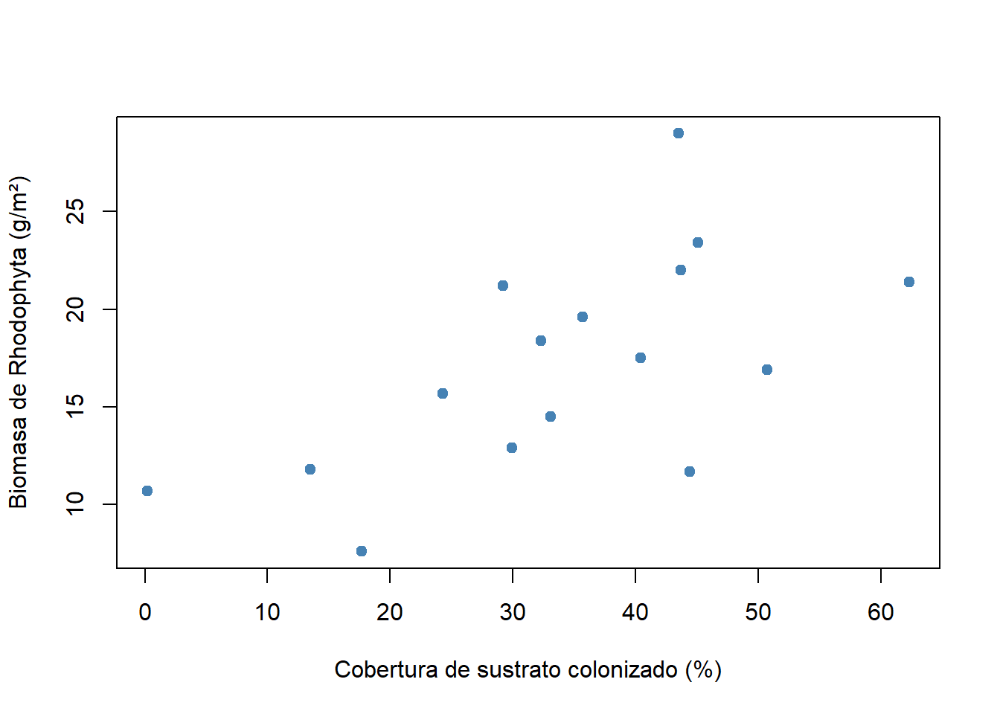
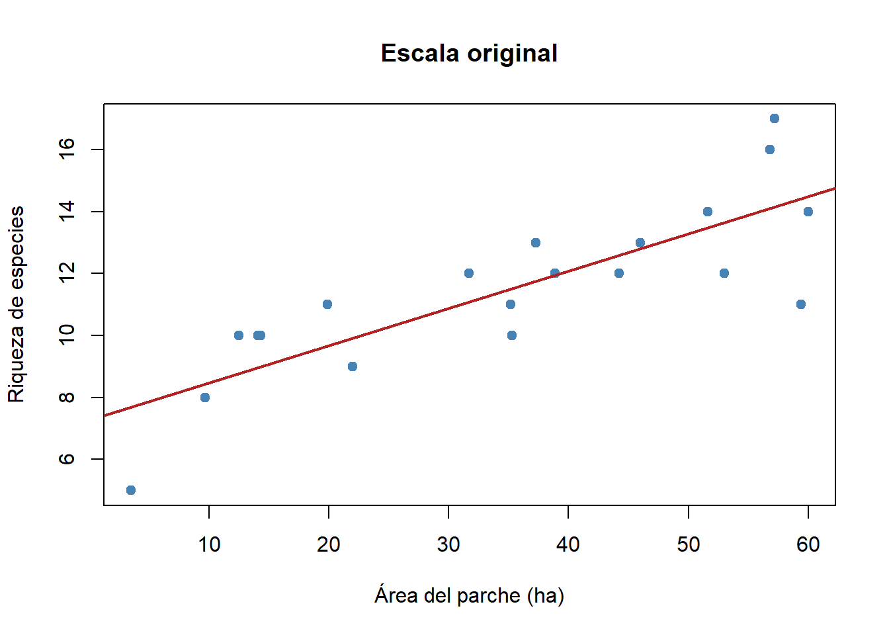
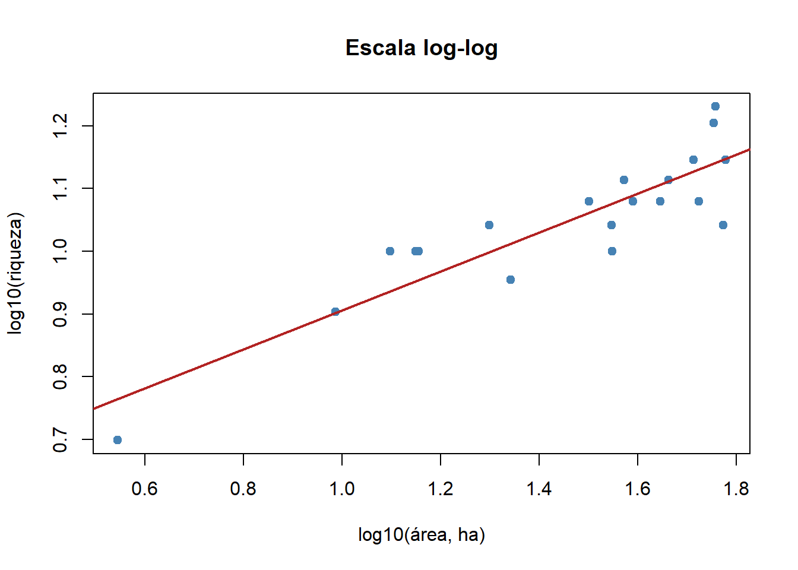
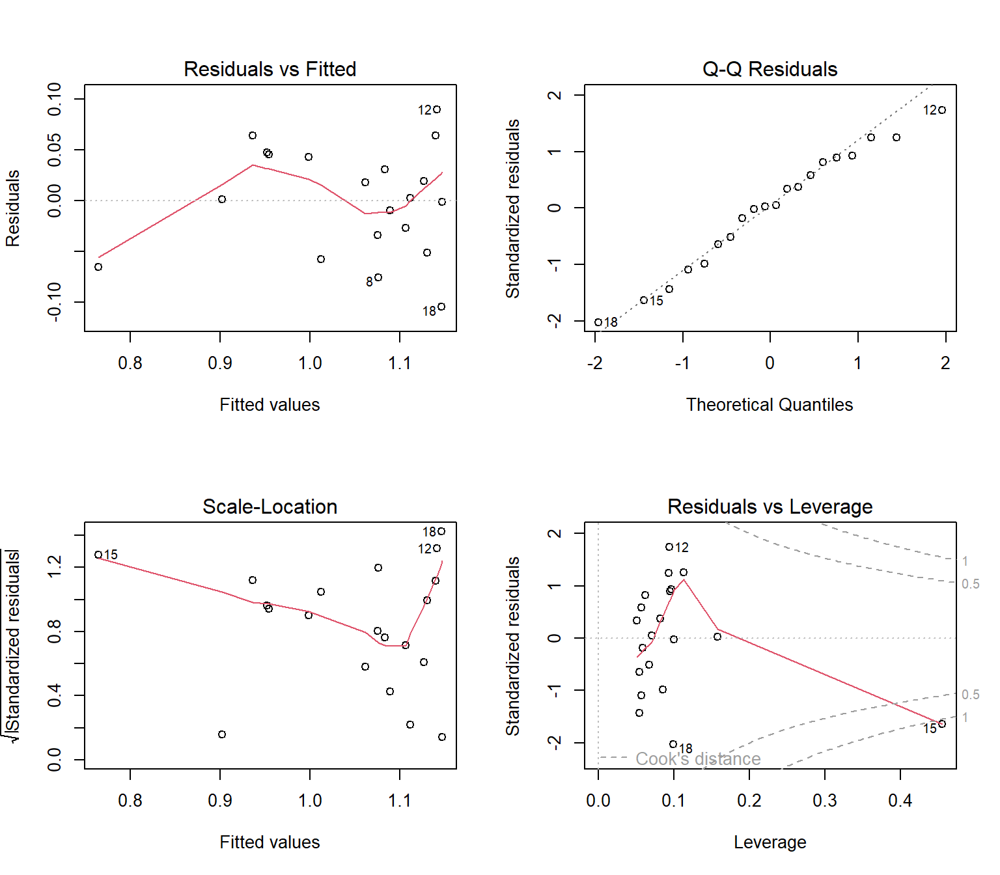
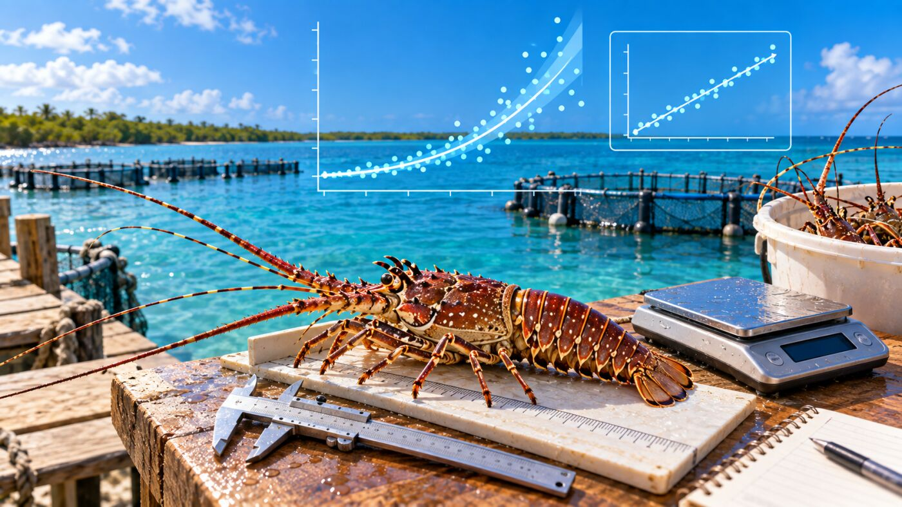
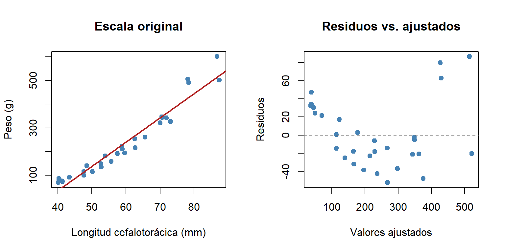
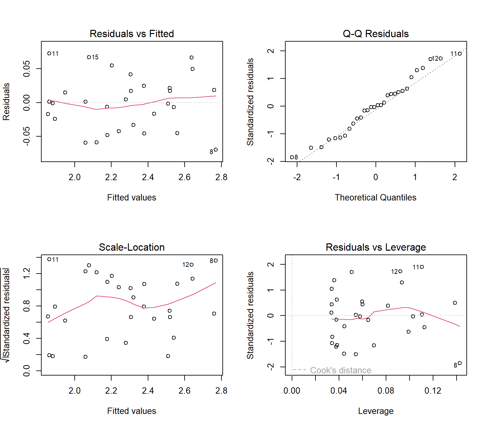

Materiales requeridos para el taller en clase
En los siguientes enlaces se podrán descargar archivos comprimidos de los talleres donde se pueden aplicar procedimientos para los modelos de regresión lineal, con datos simulados en ecosistemas del Carbe colombaino (📰 Taller3 Regresión lineal).
Nota: una vez se descarguen los materiales, se requiere descomprimirlos antes de realizar cualquier procedimiento y seguir las orientaciones del docente para realizar los ejercicios requeridos.
Diapositivas en vivo - Slides.com

Objetivos del taller
Este taller acompaña la sesión de diapositivas “Regresión Lineal Simple y Múltiple” (RA1, RA2) y cubre el bloque del viernes y del sábado en la mañana de la Semana 2. Al terminar, se podrá:
- Distinguir cuándo una pregunta requiere correlación y cuándo regresión.
- Ajustar e interpretar una regresión lineal simple (coeficientes, IC, r²), incluida la lectura de una pendiente en escala log-log.
- Verificar los supuestos del modelo con
plot(modelo)e identificar observaciones influyentes. - Ajustar una regresión múltiple, interpretar coeficientes parciales y detectar multicolinealidad con el VIF.
- Comparar modelos candidatos con AIC y con pruebas F anidadas.
Se sigue el mismo hilo de las diapositivas: la relación riqueza de peces–área de manglar (regresión simple) y el crecimiento de coral en función de la temperatura y la profundidad (regresión múltiple), con los mismos números que se muestran en la sesión.
Nota
Los datos siguen siendo simulados con set.seed() fijando la semilla en cada sección. Construidos para ilustrar cada técnica con claridad, no para representar mediciones reales.
# Librerías requeridas
library(tidyverse)
library(ggplot2)
library(kableExtra)
library(car) # vif(), durbinWatsonTest(), ncvTest()Parte 1 — Correlación vs. regresión: dos preguntas distintas
Pregunta: en un muestreo de macroalgas Rhodophyta, ¿está asociada la biomasa con la cobertura de sustrato rocoso colonizado?
# Reproducibilidad
set.seed(1962)
# Tamaño de muestra
n <- 16
# Variables auxiliares con correlación ~0.65 por construcción
z1 <- rnorm(n)
z2 <- 0.65 * z1 + sqrt(1 - 0.65^2) * rnorm(n)
# Cobertura de sustrato rocoso colonizado (%)
cobertura_pct <- round(35 + 12 * z1, 1)
cobertura_pct[cobertura_pct < 0] <- 0.5
# Biomasa de Rhodophyta (g/m²)
biomasa_gm2 <- round(18 + 5 * z2, 1)
biomasa_gm2[biomasa_gm2 < 0] <- 0.5
# Crear base de datos
algas <- data.frame(sitio = paste0("A", 1:n), cobertura_pct, biomasa_gm2)
# Tabla con los datos
head(algas, 10) %>%
kbl(booktabs = TRUE, longtable = FALSE) %>%
kable_classic(full_width = F) %>%
kableExtra::row_spec(0, bold = TRUE)| sitio | cobertura_pct | biomasa_gm2 |
|---|---|---|
| A1 | 13.5 | 11.8 |
| A2 | 33.1 | 14.5 |
| A3 | 44.4 | 11.7 |
| A4 | 43.7 | 22.0 |
| A5 | 29.9 | 12.9 |
| A6 | 50.7 | 16.9 |
| A7 | 0.2 | 10.7 |
| A8 | 43.5 | 29.0 |
| A9 | 24.3 | 15.7 |
| A10 | 62.3 | 21.4 |
# Diagrama de dispersión
plot(biomasa_gm2 ~ cobertura_pct, data = algas,
pch = 19, col = "steelblue",
xlab = "Cobertura de sustrato colonizado (%)",
ylab = "Biomasa de Rhodophyta (g/m²)")
La correlación de Pearson cuantifica qué tan asociadas están dos variables, sin asumir que una depende de la otra:
# Correlación de Pearson
cor.test(algas$cobertura_pct, algas$biomasa_gm2)
Pearson's product-moment correlation
data: algas$cobertura_pct and algas$biomasa_gm2
t = 2.9579, df = 14, p-value = 0.01038
alternative hypothesis: true correlation is not equal to 0
95 percent confidence interval:
0.1796960 0.8534886
sample estimates:
cor
0.6201598 La diferencia clave: la correlación es simétrica (da lo mismo el orden de las variables) y no produce una ecuación para predecir. La regresión asume una dirección (X predice Y) y entrega una ecuación para estimar Y en sitios no muestreados. Si la pregunta es “¿están relacionadas?”, corresponde una correlación; si es “¿cuánto cambia Y por cada unidad de X?” o “¿qué Y se esperaría en un sitio con este X?”, corresponde una regresión.
Para discutir: si se intercambia el orden de las variables, ¿cambia el valor de r? ¿Y la pendiente de lm(biomasa_gm2 ~ cobertura_pct) frente a la de lm(cobertura_pct ~ biomasa_gm2)? Se puede comprobar en R.
Parte 2 — Regresión lineal simple: riqueza de peces vs. área de manglar
Pregunta: ¿Aumenta la riqueza de especies de peces con el área del parche de manglar que las alberga?
# Reproducibilidad
set.seed(344)
# Número de parches
n <- 20
# Área de cada parche (ha)
area_ha <- round(runif(n, 0.4, 60), 1)
# Riqueza generada con una ley de potencia (S = c·A^z)
log_riq <- 0.60 + 0.31 * log10(area_ha) + rnorm(n, 0, 0.07)
riqueza <- round(10^log_riq)
riqueza[riqueza < 1] <- 1
# Crear base de datos
manglar <- data.frame(sitio = paste0("M", 1:n), area_ha, riqueza)
# Tabla con los datos
head(manglar, 10) %>%
kbl(booktabs = TRUE, longtable = FALSE) %>%
kable_classic(full_width = F) %>%
kableExtra::row_spec(0, bold = TRUE)| sitio | area_ha | riqueza |
|---|---|---|
| M1 | 51.6 | 14 |
| M2 | 56.8 | 16 |
| M3 | 60.0 | 14 |
| M4 | 12.5 | 10 |
| M5 | 14.3 | 10 |
| M6 | 35.2 | 11 |
| M7 | 53.0 | 12 |
| M8 | 35.3 | 10 |
| M9 | 37.3 | 13 |
| M10 | 22.0 | 9 |
Primero, en la escala original: ¿por qué no ajusta bien una recta?
# Ajustar modelo en escala original
mod_crudo <- lm(riqueza ~ area_ha, data = manglar)
# Proporción de variación explicada
summary(mod_crudo)$r.squared[1] 0.6721133# Diagrama de dispersión con la recta ajustada
plot(riqueza ~ area_ha, data = manglar,
pch = 19, col = "steelblue",
xlab = "Área del parche (ha)",
ylab = "Riqueza de especies",
main = "Escala original")
abline(mod_crudo, col = "firebrick", lwd = 2)
r² = 0.672: no es bajo, pero la recta no sigue la forma de la nube. Es el patrón clásico de las relaciones especie-área: la riqueza crece rápido en parches pequeños y se desacelera en los grandes, una curva de potencia y no una recta.
Transformando ambas variables a log₁₀
# Ajustar modelo log-log
mod_sp <- lm(log10(riqueza) ~ log10(area_ha), data = manglar)
# Consultar resultados
summary(mod_sp)
Call:
lm(formula = log10(riqueza) ~ log10(area_ha), data = manglar)
Residuals:
Min 1Q Median 3Q Max
-0.104423 -0.038301 0.001907 0.043592 0.089715
Coefficients:
Estimate Std. Error t value Pr(>|t|)
(Intercept) 0.59590 0.05651 10.545 3.92e-09 ***
log10(area_ha) 0.31002 0.03788 8.184 1.77e-07 ***
---
Signif. codes: 0 '***' 0.001 '**' 0.01 '*' 0.05 '.' 0.1 ' ' 1
Residual standard error: 0.05429 on 18 degrees of freedom
Multiple R-squared: 0.7882, Adjusted R-squared: 0.7764
F-statistic: 66.98 on 1 and 18 DF, p-value: 1.77e-07# Intervalos de confianza de los coeficientes
confint(mod_sp) 2.5 % 97.5 %
(Intercept) 0.4771772 0.7146295
log10(area_ha) 0.2304358 0.3896078r² sube de 0.67 a 0.79 al trabajar en escala logarítmica, porque la ley de potencia especie-área S = c·A^z se vuelve lineal al tomar logaritmos en ambos lados: log(S) = log(c) + z·log(A). La pendiente estimada (0.31) es el exponente z de esa ley.
# Diagrama de dispersión en escala log-log
plot(log10(riqueza) ~ log10(area_ha), data = manglar,
pch = 19, col = "steelblue",
xlab = "log10(área, ha)",
ylab = "log10(riqueza)",
main = "Escala log-log")
abline(mod_sp, col = "firebrick", lwd = 2)
TipVersión con
ggplot2
# Construir gráfico
ggplot(manglar, aes(x = area_ha, y = riqueza)) +
geom_point(size = 2.5, color = "steelblue") +
geom_smooth(method = "lm", color = "firebrick") + # Recta e IC 95 %
scale_x_log10() +
scale_y_log10() +
# Etiquetas de ejes
labs(x = "Área del parche (ha, escala log)",
y = "Riqueza de especies (escala log)") +
# Aplicar tema
theme_bw()Cómo se lee la pendiente en escala log-log
La pendiente no significa “especies adicionales por hectárea”. En escala log-log se interpreta como una elasticidad: un aumento de 1 % en el área se asocia con un aumento de aproximadamente 0.31 % en la riqueza. Una forma más intuitiva es preguntarse qué pasa al duplicar el área:
# Factor por el que se multiplica la riqueza al duplicar el área
2^coef(mod_sp)[2]log10(area_ha)
1.239726 Duplicar el área multiplica la riqueza esperada por 1.24 (+24 %). Como el IC 95 % de la pendiente (0.23–0.39) no incluye 0, hay evidencia de que la riqueza aumenta con el área del parche.
Nota
Otras transformaciones útiles según el tipo de dato: raíz cuadrada para conteos con varianza que crece con la media, logit para proporciones. La lógica es siempre la misma: buscar la escala en la que la relación sea aproximadamente lineal y los residuos se comporten mejor. Para conteos y datos binarios, la sesión de GLM ofrece una alternativa que evita transformar.
Parte 3 — ¿Se cumplen los supuestos?
Antes de confiar en mod_sp, se revisan los supuestos con los cuatro gráficos que produce plot() sobre un objeto lm:
# Dividir ventana gráfica
par(mfrow = c(2, 2))
# Gráficos de diagnóstico
plot(mod_sp)
# Restaurar ventana
par(mfrow = c(1, 1))Cómo leer cada panel:
- Residuals vs Fitted: se busca un patrón (curva, embudo). Una nube sin forma clara apoya la linealidad y la homocedasticidad.
- Q-Q Residuals: los puntos deben seguir aproximadamente la diagonal (normalidad de los residuos).
- Scale-Location: la dispersión vertical debe ser pareja a lo largo del eje X (homocedasticidad).
- Residuals vs Leverage: señala observaciones con influencia desproporcionada; se vigilan los puntos que superan las líneas de distancia de Cook (0.5 y 1).
El panel 2 se complementa con una prueba formal de normalidad:
# Normalidad de los residuos
shapiro.test(resid(mod_sp))
Shapiro-Wilk normality test
data: resid(mod_sp)
W = 0.97553, p-value = 0.8645Con un valor p muy por encima de 0.05, no hay evidencia de que los residuos se aparten de la normalidad.
Independencia de los residuos
Como en el Taller 2, la independencia se asegura, en primer lugar, desde el diseño: parches espacialmente independientes, sin pseudorreplicación. El estadístico de Durbin-Watson puede complementarlo:
# Independencia de los residuos
durbinWatsonTest(mod_sp) lag Autocorrelation D-W Statistic p-value
1 -0.06045647 2.107866 0.776
Alternative hypothesis: rho != 0
Nota
Durbin-Watson evalúa la autocorrelación según el orden de las filas. Aquí los parches están numerados sin un orden espacial o temporal, así que la prueba dice poco sobre la dependencia real. Si los parches se hubieran registrado a lo largo de la costa, ordenar las filas en esa secuencia sí permitiría evaluar si parches vecinos se parecen entre sí.
Una observación influyente
El panel 4 muestra un punto más allá de la línea de Cook = 1. Se identifica:
# Distancias de Cook
cd <- cooks.distance(mod_sp)
# Tres valores más altos
round(sort(cd, decreasing = TRUE)[1:3], 3) 15 18 12
1.124 0.225 0.156 # Parche con mayor influencia
manglar[which.max(cd), ] sitio area_ha riqueza
15 M15 3.5 5Es el parche M15, de 3.5 ha: el único parche pequeño de la muestra (el siguiente mide 9.7 ha). En escala logarítmica queda aislado en el extremo izquierdo y tiene mucha palanca sobre la pendiente. Se evalúa la sensibilidad del modelo sin él:
# Ajustar el modelo sin el parche influyente
mod_sp_sin <- update(mod_sp, subset = -which.max(cd))
# Comparar coeficientes
rbind(con_todos = coef(mod_sp), sin_parche = coef(mod_sp_sin)) (Intercept) log10(area_ha)
con_todos 0.5959034 0.3100218
sin_parche 0.6799944 0.2564423# Intervalos de confianza sin el parche
confint(mod_sp_sin) 2.5 % 97.5 %
(Intercept) 0.5270989 0.8328900
log10(area_ha) 0.1562127 0.3566719La pendiente baja de 0.31 a 0.26, pero sigue siendo positiva y su IC sigue excluyendo 0: la conclusión se mantiene.
ImportanteQué hacer (y qué no) con un punto influyente
- No eliminarlo solo porque “mejora” o “empeora” el ajuste. Se elimina únicamente si hay un error demostrable de medición o de registro.
- Sí reportar el modelo con y sin la observación, para mostrar la sensibilidad del resultado.
- Lección de diseño (RA1): las áreas se muestrearon de forma uniforme entre 0.4 y 60 ha, lo que deja muy pocos parches pequeños. Si el análisis se hará en escala logarítmica, conviene muestrear el gradiente de manera pareja en esa escala (p. ej., parches de ~1, 3, 10 y 30 ha), para que ningún punto quede aislado.
Parte 4 — Regresión múltiple: crecimiento de coral, temperatura y profundidad
Pregunta: ¿Cómo afectan la temperatura y la profundidad al crecimiento de coral (mm/año), de forma simultánea?
# Reproducibilidad
set.seed(194)
# Número de colonias
n <- 32
# Predictores
temperatura <- round(runif(n, 25, 31), 1)
profundidad <- round(runif(n, 2, 25), 1)
# Generar crecimiento
crecimiento <- round(-8.70 + 0.40 * temperatura - 0.08 * profundidad + rnorm(n, 0, 0.45), 2)
# Crear base de datos
coral <- data.frame(colonia = paste0("C", 1:n), temperatura, profundidad, crecimiento)
# Tabla con los datos
head(coral, 10) %>%
kbl(booktabs = TRUE, longtable = FALSE) %>%
kable_classic(full_width = F) %>%
kableExtra::row_spec(0, bold = TRUE)| colonia | temperatura | profundidad | crecimiento |
|---|---|---|---|
| C1 | 26.6 | 14.9 | 0.69 |
| C2 | 29.1 | 10.7 | 2.14 |
| C3 | 27.7 | 12.4 | 0.88 |
| C4 | 27.7 | 9.2 | 1.92 |
| C5 | 25.1 | 14.7 | -0.03 |
| C6 | 27.3 | 24.9 | 1.20 |
| C7 | 29.4 | 16.8 | 1.03 |
| C8 | 27.2 | 2.8 | 2.13 |
| C9 | 29.2 | 14.2 | 2.52 |
| C10 | 30.8 | 18.1 | 2.90 |
# Ajustar modelo múltiple
mod_coral <- lm(crecimiento ~ temperatura + profundidad, data = coral)
# Consultar resultados
summary(mod_coral)
Call:
lm(formula = crecimiento ~ temperatura + profundidad, data = coral)
Residuals:
Min 1Q Median 3Q Max
-0.83434 -0.27091 0.02908 0.27542 0.86040
Coefficients:
Estimate Std. Error t value Pr(>|t|)
(Intercept) -8.73281 1.40107 -6.233 8.42e-07 ***
temperatura 0.40079 0.05084 7.883 1.08e-08 ***
profundidad -0.07507 0.01281 -5.862 2.33e-06 ***
---
Signif. codes: 0 '***' 0.001 '**' 0.01 '*' 0.05 '.' 0.1 ' ' 1
Residual standard error: 0.4478 on 29 degrees of freedom
Multiple R-squared: 0.7227, Adjusted R-squared: 0.7036
F-statistic: 37.79 on 2 and 29 DF, p-value: 8.381e-09# Intervalos de confianza de los coeficientes
confint(mod_coral) 2.5 % 97.5 %
(Intercept) -11.5983095 -5.86730277
temperatura 0.2968150 0.50477291
profundidad -0.1012643 -0.04887736En regresión múltiple se reporta el R² ajustado (0.70), que penaliza el número de predictores; el R² simple (0.72) siempre aumenta al agregar variables, aunque no aporten.
Coeficientes parciales: ¿qué significa cada b ahora?
Cada coeficiente representa el efecto de esa variable manteniendo constante la otra:
- b(temperatura) = 0.401: por cada grado adicional, el crecimiento aumenta 0.4 mm/año, comparando corales a la misma profundidad.
- b(profundidad) = -0.075: por cada metro adicional, el crecimiento disminuye 0.075 mm/año, a temperatura constante.
¿Qué pasa si se ignora la profundidad?
# Modelo con un solo predictor
mod_temp <- lm(crecimiento ~ temperatura, data = coral)
# Comparar la pendiente simple con la parcial
rbind(simple = coef(mod_temp)["temperatura"],
parcial = coef(mod_coral)["temperatura"]) temperatura
simple 0.3113164
parcial 0.4007940# Correlación entre predictores
cor(coral$temperatura, coral$profundidad)[1] 0.3002552Con solo la temperatura, la pendiente es 0.31 y subestima el efecto (0.4 en el modelo múltiple). En esta muestra, por azar, las colonias más cálidas quedaron algo más profundas (r = 0.30), y la profundidad reduce el crecimiento: parte del efecto positivo de la temperatura queda “tapado” por el de la profundidad. Por eso el modelo múltiple es necesario y no bastan dos regresiones simples por separado.
TipCómo reportar el resultado
En la sección de resultados de un artículo o de la tesis, se reportan los coeficientes con su IC, el R² ajustado, la prueba global y el diagnóstico de colinealidad. Por ejemplo:
El crecimiento coralino aumentó con la temperatura (b = 0,40 mm/año por °C; IC 95 %: 0,30–0,50) y disminuyó con la profundidad (b = −0,075 mm/año por m; IC 95 %: −0,10 a −0,05) (regresión lineal múltiple, F2,29 = 37,8; p < 0,001; R² ajustado = 0,70; VIF = 1,10).
Esta estructura es la que se espera en la Evidencia 1.
Parte 5 — Multicolinealidad: ¿se puede confiar en cada coeficiente por separado?
Cuando dos predictores están muy correlacionados entre sí, el modelo no puede separar el efecto de cada uno y los coeficientes se vuelven inestables. El Factor de Inflación de Varianza (VIF) lo cuantifica: para cada predictor, se regresa contra los demás y se usa el r² de esa regresión auxiliar:
\[VIF_j = \frac{1}{1 - r^2_j}\]
Aplicando la fórmula, se construye la función a mano:
# VIF calculado a mano
vif_manual <- function(modelo) {
predictores <- all.vars(formula(modelo))[-1]
datos <- model.frame(modelo)
sapply(predictores, function(v) {
otros <- setdiff(predictores, v)
f <- reformulate(otros, response = v)
r2 <- summary(lm(f, data = datos))$r.squared
1 / (1 - r2)
})
}
vif_manual(mod_coral)temperatura profundidad
1.099086 1.099086 El paquete car hace este cálculo automáticamente con vif(); se puede usar para verificar el cálculo manual:
# VIF con el paquete car
vif(mod_coral)temperatura profundidad
1.099086 1.099086 VIF ≈ 1.1 en ambos predictores (con dos predictores el VIF es idéntico para los dos, porque ambos dependen de la misma correlación). Está muy cerca de 1: la correlación de 0.30 basta para modificar la pendiente simple (coeficientes parciales), pero no infla de forma apreciable la varianza de los coeficientes. Como regla práctica, VIF > 5–10 es señal de alerta y motivo para reconsiderar el modelo (quitar un predictor, combinarlos o rediseñar el muestreo).
Para discutir (RA1): en el mar, la temperatura suele disminuir con la profundidad. Si el muestreo solo incluyera sitios con una termoclina marcada, ¿qué pasaría con el VIF y con la interpretación de cada coeficiente? ¿Cómo lo evitaría el diseño de muestreo?
Parte 6 — Selección de modelos con AIC
Pregunta: ¿Mejora el modelo al agregar un tercer predictor que, en teoría, también podría influir en el crecimiento: la turbidez del agua?
# Reproducibilidad
set.seed(77)
# Turbidez del agua (NTU)
coral$turbidez <- round(runif(n, 1, 12), 1)
# Modelos candidatos
mod_prof <- lm(crecimiento ~ profundidad, data = coral)
mod_full <- lm(crecimiento ~ temperatura + profundidad + turbidez, data = coral)# Tabla de comparación
tabla_aic <- data.frame(
modelo = c("crecimiento ~ temperatura",
"crecimiento ~ profundidad",
"crecimiento ~ temperatura + profundidad",
"crecimiento ~ temperatura + profundidad + turbidez"),
r2 = round(c(summary(mod_temp)$r.squared, summary(mod_prof)$r.squared,
summary(mod_coral)$r.squared, summary(mod_full)$r.squared), 3),
AIC = round(c(AIC(mod_temp), AIC(mod_prof), AIC(mod_coral), AIC(mod_full)), 2)
)
# Diferencia respecto al mejor modelo
tabla_aic$dAIC <- tabla_aic$AIC - min(tabla_aic$AIC)
# Ordenar de mejor a peor
tabla_aic[order(tabla_aic$AIC), ] %>%
kbl(booktabs = TRUE, longtable = FALSE, row.names = FALSE) %>%
kable_classic(full_width = F) %>%
kableExtra::row_spec(0, bold = TRUE)| modelo | r2 | AIC | dAIC |
|---|---|---|---|
| crecimiento ~ temperatura + profundidad | 0.723 | 44.24 | 0.00 |
| crecimiento ~ temperatura + profundidad + turbidez | 0.728 | 45.65 | 1.41 |
| crecimiento ~ temperatura | 0.394 | 67.25 | 23.01 |
| crecimiento ~ profundidad | 0.128 | 78.89 | 34.65 |
El modelo temperatura + profundidad tiene el AIC más bajo, aunque el modelo con turbidez tiene un r² apenas mayor: el r² siempre sube al agregar predictores, mientras que el AIC penaliza la complejidad que no aporta. La diferencia es de solo 1.4 puntos (ΔAIC < 2, soporte similar), así que la decisión se apoya en la parsimonia: se prefiere el modelo más simple.
Como los modelos están anidados, también puede usarse una prueba F:
# Comparar modelos anidados
anova(mod_coral, mod_full)Analysis of Variance Table
Model 1: crecimiento ~ temperatura + profundidad
Model 2: crecimiento ~ temperatura + profundidad + turbidez
Res.Df RSS Df Sum of Sq F Pr(>F)
1 29 5.8152
2 28 5.7088 1 0.10634 0.5216 0.4762Agregar la turbidez no reduce significativamente la variación residual (p = 0.48), en coherencia con el AIC.
step() automatiza la búsqueda por eliminación hacia atrás:
# Selección por eliminación hacia atrás
mod_step <- step(mod_full, direction = "backward", trace = 1)Start: AIC=-47.16
crecimiento ~ temperatura + profundidad + turbidez
Df Sum of Sq RSS AIC
- turbidez 1 0.1063 5.8152 -48.568
<none> 5.7088 -47.159
- profundidad 1 6.8826 12.5914 -23.847
- temperatura 1 12.5233 18.2321 -12.002
Step: AIC=-48.57
crecimiento ~ temperatura + profundidad
Df Sum of Sq RSS AIC
<none> 5.8152 -48.568
- profundidad 1 6.8898 12.7050 -25.560
- temperatura 1 12.4624 18.2775 -13.922# Modelo seleccionado
formula(mod_step)crecimiento ~ temperatura + profundidad
Nota
- Los valores de AIC que imprime
step()(p. ej., −48.57) no coinciden con los deAIC()(44.24), porquestep()usaextractAIC(), que omite una constante. Las diferencias entre modelos y el orden resultante son los mismos. step()solo compara los modelos que se le entregan. Debe aplicarse a un conjunto de candidatos con sentido biológico, no a “todas las variables disponibles”. AIC no indica si un modelo es verdadero, solo cuál es el más parsimonioso entre los comparados.
Parte 7 — Lista de verificación antes de reportar el modelo
# Función de verificación
checklist_regresion <- function(modelo) {
s <- summary(modelo)
cat("r² =", round(s$r.squared, 3), "| r² ajustado =", round(s$adj.r.squared, 3), "\n")
cat("IC 95 % de los coeficientes (¿excluyen 0?):\n")
print(round(confint(modelo), 3))
cat("Normalidad de residuos (Shapiro): p =", round(shapiro.test(resid(modelo))$p.value, 3), "\n")
cat("Máxima distancia de Cook:", round(max(cooks.distance(modelo)), 2),
ifelse(max(cooks.distance(modelo)) > 1, "-> revisar observación influyente", "-> OK"), "\n")
if (length(coef(modelo)) > 2) {
cat("VIF:\n"); print(round(vif_manual(modelo), 2))
}
}
# Aplicar a los dos modelos del taller
checklist_regresion(mod_sp)r² = 0.788 | r² ajustado = 0.776
IC 95 % de los coeficientes (¿excluyen 0?):
2.5 % 97.5 %
(Intercept) 0.477 0.715
log10(area_ha) 0.230 0.390
Normalidad de residuos (Shapiro): p = 0.865
Máxima distancia de Cook: 1.12 -> revisar observación influyente checklist_regresion(mod_coral)r² = 0.723 | r² ajustado = 0.704
IC 95 % de los coeficientes (¿excluyen 0?):
2.5 % 97.5 %
(Intercept) -11.598 -5.867
temperatura 0.297 0.505
profundidad -0.101 -0.049
Normalidad de residuos (Shapiro): p = 0.875
Máxima distancia de Cook: 0.33 -> OK
VIF:
temperatura profundidad
1.1 1.1 Antes de reportar cualquier modelo de regresión, conviene verificar:
- ¿La relación es lineal (o se transformó para que lo sea)?
- ¿Se revisaron los residuos (normalidad, homocedasticidad) y las observaciones influyentes?
- ¿El diseño garantiza la independencia de las observaciones?
- ¿El IC 95 % de cada pendiente de interés excluye 0?
- ¿Se interpretó r² (o R² ajustado) como variación explicada y no como causalidad?
- ¿Se evaluó el VIF y se compararon modelos candidatos con AIC, sin extrapolar fuera del rango observado?
Parte 8 — Estudio de caso: relación talla-peso de la langosta espinosa

A continuación se presentan el contexto y los datos; la decisión se toma con los mismos criterios de la lista de verificación (Parte 7).
NotaEl contexto
Un equipo que trabaja en el cultivo experimental de juveniles de langosta espinosa (Panulirus argus) necesita estimar el peso de cada individuo a partir de su longitud cefalotorácica (LC), para no tener que pesarlos en cada revisión. Se midieron y pesaron 30 individuos. Además, se quiere saber si el crecimiento es isométrico: si el peso aumenta con el cubo de la talla (peso ∝ LC³), la forma corporal se mantiene al crecer.
Antes de escribir código, conviene responder:
- ¿Es una pregunta de correlación o de regresión? ¿Cuál es la variable respuesta?
- El peso depende del volumen del animal, y el volumen crece con el cubo de la talla. ¿Qué forma se espera en la relación talla-peso, y en qué escala se volvería lineal?
- Si el crecimiento es isométrico, ¿qué valor debería tener la pendiente en esa escala?
A continuación se simulan los datos y se ajusta, primero, el modelo más ingenuo:
# Reproducibilidad
set.seed(2026)
# Número de individuos
n <- 30
# Longitud cefalotorácica (mm)
talla_lc <- round(runif(n, 40, 95), 1)
# Peso (g) con una relación alométrica
peso_g <- round(0.0033 * talla_lc^2.7 * exp(rnorm(n, 0, 0.10)))
# Crear base de datos
langosta <- data.frame(individuo = paste0("L", 1:n), talla_lc, peso_g)
# Tabla con los datos
head(langosta, 10) %>%
kbl(booktabs = TRUE, longtable = FALSE) %>%
kable_classic(full_width = F) %>%
kableExtra::row_spec(0, bold = TRUE)| individuo | talla_lc | peso_g |
|---|---|---|
| L1 | 78.4 | 492 |
| L2 | 70.6 | 344 |
| L3 | 47.7 | 115 |
| L4 | 55.7 | 158 |
| L5 | 70.5 | 346 |
| L6 | 41.4 | 74 |
| L7 | 65.6 | 261 |
| L8 | 87.4 | 501 |
| L9 | 53.9 | 181 |
| L10 | 71.9 | 342 |
# Ajustar modelo en escala original
mod_lineal <- lm(peso_g ~ talla_lc, data = langosta)
# Proporción de variación explicada
summary(mod_lineal)$r.squared[1] 0.9384113# Dividir ventana gráfica
par(mfrow = c(1, 2))
# Datos y recta ajustada
plot(peso_g ~ talla_lc, data = langosta,
pch = 19, col = "steelblue",
xlab = "Longitud cefalotorácica (mm)", ylab = "Peso (g)",
main = "Escala original")
abline(mod_lineal, col = "firebrick", lwd = 2)
# Residuos vs. valores ajustados
plot(fitted(mod_lineal), resid(mod_lineal),
pch = 19, col = "steelblue",
xlab = "Valores ajustados", ylab = "Residuos",
main = "Residuos vs. ajustados")
abline(h = 0, lty = 2, col = "gray40")
# Restaurar ventana
par(mfrow = c(1, 1))# Homocedasticidad de los residuos (Breusch-Pagan)
ncvTest(mod_lineal)Non-constant Variance Score Test
Variance formula: ~ fitted.values
Chisquare = 6.190429, Df = 1, p = 0.012844Con el r² y esos dos gráficos en mano, se debe tomar una decisión antes de seguir leyendo: ¿se reporta el modelo lineal tal como está, o se ajusta otro? Si es otro, ¿cuál?
TipVerificación del razonamiento (clic para revelar)
1. Correlación o regresión: es regresión. El objetivo es predecir el peso a partir de la talla, así que el peso es la respuesta y la talla el predictor.
2. Forma esperada: el peso es proporcional al volumen, que crece aproximadamente con el cubo de la talla. La relación es una ley de potencia (peso = a·LC^b), igual que la relación especie-área de la Parte 2, y se vuelve lineal en escala log-log: log(peso) = log(a) + b·log(LC).
3. Pendiente esperada: con crecimiento isométrico, b = 3.
El resultado del modelo ingenuo: r² = 0.94, muy alto, pero los residuos forman una curva (positivos en los extremos, negativos en el centro) y un embudo (más dispersión en los animales grandes), y la prueba de Breusch-Pagan confirma la heterocedasticidad. Un r² alto no valida un modelo mal especificado.
Se ajusta el modelo log-log:
# Ajustar modelo alométrico
mod_alom <- lm(log10(peso_g) ~ log10(talla_lc), data = langosta)
# Consultar resultados
summary(mod_alom)
Call:
lm(formula = log10(peso_g) ~ log10(talla_lc), data = langosta)
Residuals:
Min 1Q Median 3Q Max
-0.06957 -0.03066 -0.00004 0.02090 0.07261
Coefficients:
Estimate Std. Error t value Pr(>|t|)
(Intercept) -2.47128 0.12946 -19.09 <2e-16 ***
log10(talla_lc) 2.69928 0.07349 36.73 <2e-16 ***
---
Signif. codes: 0 '***' 0.001 '**' 0.01 '*' 0.05 '.' 0.1 ' ' 1
Residual standard error: 0.04061 on 28 degrees of freedom
Multiple R-squared: 0.9797, Adjusted R-squared: 0.9789
F-statistic: 1349 on 1 and 28 DF, p-value: < 2.2e-16# Intervalos de confianza
confint(mod_alom) 2.5 % 97.5 %
(Intercept) -2.736461 -2.206095
log10(talla_lc) 2.548743 2.849817# Diagnóstico del modelo alométrico
par(mfrow = c(2, 2))
plot(mod_alom)
par(mfrow = c(1, 1))
# Homocedasticidad y normalidad
ncvTest(mod_alom)Non-constant Variance Score Test
Variance formula: ~ fitted.values
Chisquare = 0.09089249, Df = 1, p = 0.76305shapiro.test(resid(mod_alom))
Shapiro-Wilk normality test
data: resid(mod_alom)
W = 0.96608, p-value = 0.4383Los residuos ya no muestran curva ni embudo, y ninguna prueba detecta problemas.
¿Es isométrico el crecimiento? Aquí la hipótesis nula no es b = 0 (que el peso no dependa de la talla, algo obvio), sino b = 3. Se contrasta con un t-test sobre la pendiente, la misma lógica de la Semana 1:
# Pendiente y su error estándar
b <- coef(mod_alom)[2]
ee <- summary(mod_alom)$coefficients[2, 2]
# t para H0: b = 3
t_iso <- (b - 3) / ee
p_iso <- 2 * pt(-abs(t_iso), df = mod_alom$df.residual)
c(b = unname(b), t = unname(t_iso), p = unname(p_iso)) b t p
2.6992800207 -4.0920087912 0.0003281809 b = 2.7 (IC 95 %: 2.55–2.85). Como el intervalo no incluye 3 (p = 0.00033), se rechaza la isometría: el crecimiento es alométrico negativo, es decir, los individuos grandes pesan menos de lo que predeciría una forma corporal constante.
Para usar el modelo en el cultivo, la ecuación se retransforma a la escala original:
# Coeficiente a de peso = a·LC^b
a <- 10^coef(mod_alom)[1]
c(a = unname(a), b = unname(b)) a b
0.003378486 2.699280021 # Peso esperado de un juvenil de 60 mm de LC
a * 60^b(Intercept)
213.0347 El peso esperado de un juvenil de 60 mm de LC es de unos 213 g. Solo es válido dentro del rango de tallas medido (40.1–87.4 mm).
Cierre — Una base para el futuro proyecto de grado
Como en el taller de la Semana 1, es probable que todavía no se cuente con datos propios. Este cierre tiene dos partes:
Actividad en clase (10 minutos, sin código)
En parejas, se responde sobre el proyecto de grado de cada integrante (el mismo trabajado en la Semana 1):
- ¿Qué variable continua se busca explicar o predecir?
- ¿Con uno o varios predictores? ¿Cuáles, y con qué justificación biológica?
- ¿Se esperaría necesitar una transformación (log, raíz) o un GLM, porque la respuesta es un conteo o una presencia/ausencia?
Luego, se dibuja en papel el gráfico de dispersión esperado de la variable respuesta contra el predictor principal. ¿La relación es una recta o requeriría una transformación como la de la Parte 2? ¿El rango del predictor se muestrearía de forma pareja (Parte 3, observación influyente)?
Antes de la próxima sesión (tarea corta)
Se puede adaptar el código de este taller a la propia idea, con valores simulados pero plausibles para el sistema de estudio:
- Se copia la sección más parecida al diseño propuesto (un predictor → Parte 2; dos o más → Parte 4).
- Se cambian los nombres de las variables y los coeficientes simulados por los esperados en el propio tema.
- Se ejecutan
plot(modelo)ychecklist_regresion()sobre el modelo simulado. ¿La salida de R es coherente con lo planteado?
Cuando más adelante se trabaje la Evidencia 1 con datos reales (propios o de un artículo publicado en la línea de investigación correspondiente), ya se tendrá practicado el flujo completo: explorar → transformar si hace falta → ajustar → diagnosticar → comparar modelos.
Material de apoyo

Para repasar y profundizar después de la sesión:
- Cuestionario 1 · Regresión lineal simple y múltiple — 12 preguntas de opción múltiple con pista y explicación, basadas en las Partes 1 a 8 de este taller.
- Cuestionario 2 · Regresión lineal — escenarios nuevos con preguntas abiertas para interpretar salidas de modelos, con retroalimentación al final.
Referencias
Quinn, G. P., & Keough, M. J. (2024). Experimental Design and Data Analysis for Biologists (2nd ed.). Cambridge University Press. enlace_ejercicios
Logan, M. (2011). Biostatistical Design and Analysis Using R. Wiley-Blackwell. enlace_ejercicios; enlace_libro
Calvo Sendín, J. F. (2025). Análisis estadístico de datos biológicos en R. Universidad de Murcia. — Consultado como referencia técnica para regresiones lineales. enlace
Nota
Los ejemplos y bases de datos de este taller son de elaboración propia para este curso; no reproducen los ejercicios ni el código de las fuentes citadas.